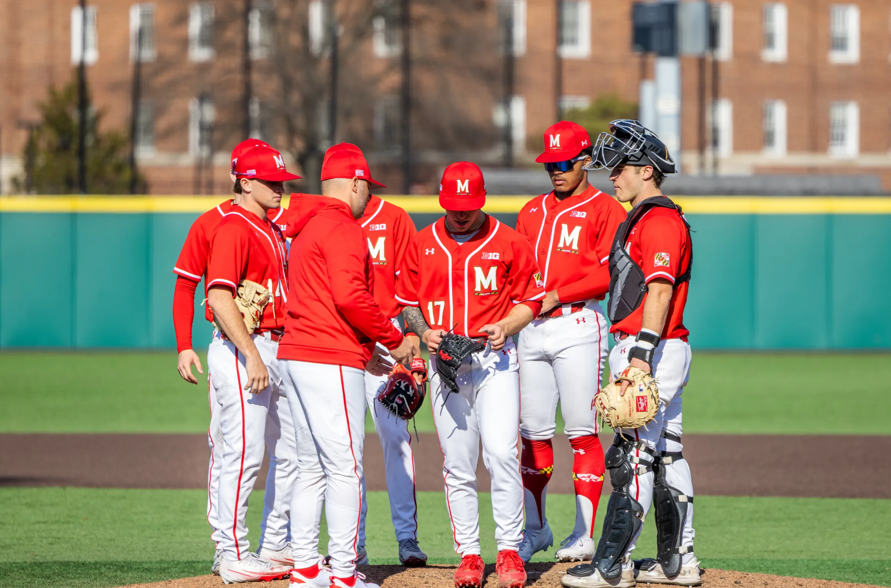
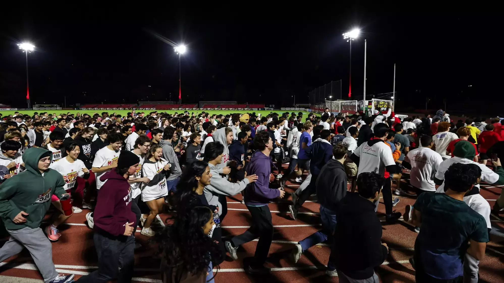
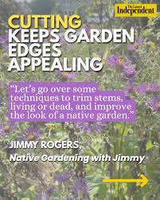

Maryland baseball tumbles in 13-1 run-rule loss to Michigan State in seven innings
The Terps fall to 6-15 in conference play.

The Terps fall to 6-15 in conference play.
Dana Hubbard breathes new life into Helping Hands.

A team of freshman and transfers aprtakes in a years-long tradition--running a mile with fans at 12:03 a.m.
A competition wind turbine team meets weekly to share ideas and spread information about the importance of sustainable energy.
Do voters care about the different between positve comments and official endorsement?

An Instagram carousel highlighting tips from the Native Garden with Jimmy